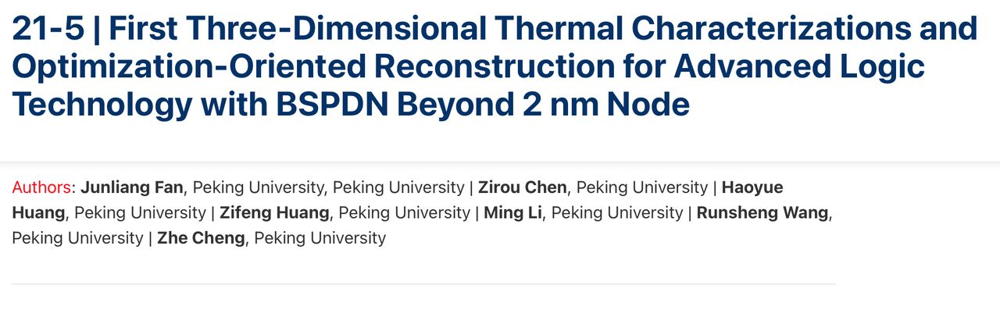
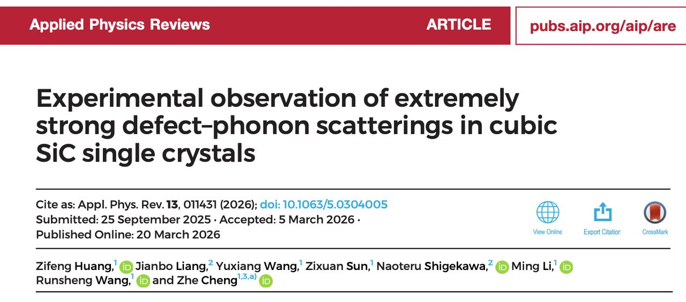
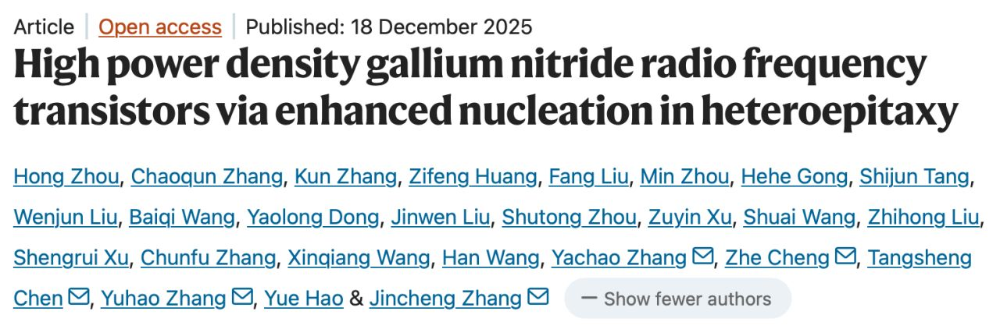
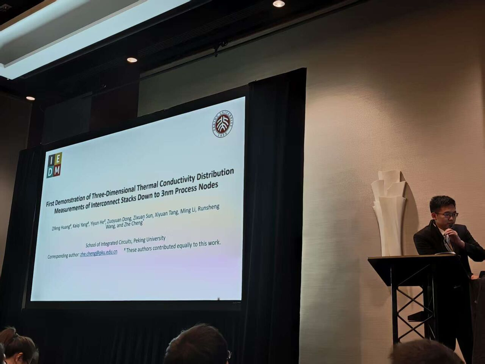

Thermal Management and Advanced Integration of Chips Laboratory
Advanced Packaging • Heterogeneous Integration • Thermal Characterization TherMAX-IC Lab · Zhe Cheng Research Group
News
Selected updates from the laboratory, including research progress, publications,
facilities, student activities, and collaboration news.
Sep2026
Thermal management of backside power delivery networks: paper accepted by IEEE IEDM 2026
A paper by the group on thermal management of backside power delivery
networks (BSPDN) has been accepted by the 2026 IEEE International Electron
Devices Meeting (IEDM). The work presents the first three-dimensional
thermal characterization and optimization-oriented reconstruction of advanced
logic technologies with BSPDN beyond the 2 nm node. The first three authors —
Junliang Fan, Zirou Chen, and Haoyue Huang — are all undergraduate students
in the group.

Research · IEEE IEDM 2026
Mar2026
Thermal conduction in doped 3C-SiC published in Applied Physics Reviews
The group's work on thermal conduction in doped 3C-SiC has been published in
Applied Physics Reviews. The study experimentally reveals the effect of
resonant phonon scattering on thermal transport, deepening the understanding
of heat conduction in wide-bandgap semiconductors. With a thermal conductivity
second only to diamond among large-wafer materials, together with full
compatibility with silicon processing, 3C-SiC is a promising candidate
material for through-silicon via (TSV) applications in advanced integration.

Publications · Applied Physics Reviews
Jan2026
Collaborative study observes ultra-low near-junction thermal resistance in GaN devices
In a collaborative study on GaN devices, advanced thin-film epitaxial growth
has enabled an ultra-low near-junction thermal resistance — an important step
toward high-power-density gallium nitride radio-frequency transistors. The
work has been published in Nature Communications, and a follow-up paper
elucidating the underlying heat-conduction mechanism is forthcoming.

Research · Collaboration · Nature Communications
Dec2025
Group's first IEDM paper: 3D thermal conductivity mapping of advanced interconnects

Presenting the group's IEDM 2025 paper on interconnect thermal tomography
At the 2025 IEEE International Electron Devices Meeting (IEDM) — the group's
first paper at the conference — we presented high-precision, layer-by-layer
measurements of interconnect thermal conductivity across advanced logic process
nodes from 28 nm down to 3 nm. Combining advanced sample preparation with
high-resolution thermal characterization and thermal scanning, we mapped the
in-layer spatial distribution of thermal conductivity for the first time. The
results show effective thermal conductivities of only about 1 W/m-K — far below
copper (~400 W/m-K) — with Cu/dielectric interface thermal resistance
(60–80 m²-K/GW) dominating heat transport. Guided by these findings, finite-element
simulations propose high-thermal-conductivity AlN bonding layers, diamond heat
spreaders, and high-convection cooling to keep 3D-stacked transistors within
acceptable temperature rise. Zifeng Huang and Yiyun He are co-first authors, and
Zhe Cheng is the corresponding author.